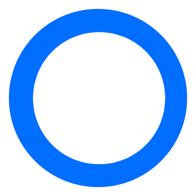

<ion-row class="header" >
  <ion-col size="10" class="margin-top-20 font-size-25 align-center">Kettlebell Squats - 4 Sets</ion-col>
  <ion-col size="2" class="margin-top-20 closeModal" (click)="closeModal()" >
    <ion-icon ios="ios-close" md="md-close" class="font-size-56"></ion-icon>
  </ion-col>
</ion-row>
<ion-content>
  <div class="video ">
    <video class="video-css" controls  #videoPlayer>
        <source src="{{url}}" type="video/mp4" />
        Browser not supported
    </video>
    </div>
</ion-content>
<ion-footer>
  <ion-fab horizontal="end" vertical="bottom" slot="fixed">
    <ion-fab-button color="dark">
      <ion-icon ios="ios-arrow-dropup-circle" md="md-arrow-dropup-circle"></ion-icon>
    </ion-fab-button>
    <ion-fab-list side="top">
      <ion-fab-button class ="ion-fabButton margin-top-12" data-desc="Set 4: 10 Reps High Intensity" (click)="onClickOfFourthSet()">
        
        
      </ion-fab-button>
      <ion-fab-button class ="ion-fabButton margin-top-12"  data-desc="Set 3: 10 Reps High Intensity" (click)="onClickOfThirdSet()">
        
        
      </ion-fab-button>
      <ion-fab-button class ="ion-fabButton margin-top-neg-7"  data-desc="Set 2: 10 Reps High Intensity"
      (click)="onClickOfSecondSet()">
        
        
      </ion-fab-button>>
      <ion-fab-button class ="ion-fabButton"  data-desc="Set 1: 10 Reps High Intensity" (click)="onClickOfFirstSet()">
        
        
        <!-- <ion-icon class="color-text ion-size" ios="ios-checkmark-circle" md="md-checkmark-circle" ></ion-icon> -->
        <!-- <ion-icon class="color-text ion-size" ios="ios-radio-button-off" md="md-radio-button-off" *ngIf="!isFirstSelected"></ion-icon> -->
      </ion-fab-button>
    </ion-fab-list>
  </ion-fab>

</ion-footer>